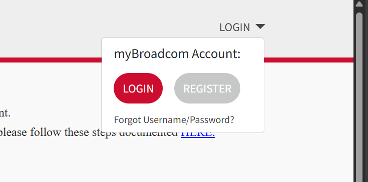
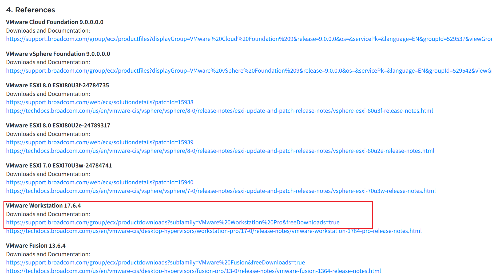

VMWare Workstation Pro 17 安装与配置
最后更新于 2025-10-27 by N0rth5ea
注意
VMWare Workstation Pro 个人非商业使用已免费提供，却有人花钱买盗版，别做大冤种哈。
VMWare Workstation Pro 17 下载安装
-
搜索并选择
Fusion and Workstation或直接点开搜索结果 -
选择VMware Workstation Pro for PC下载（点击Download Now）
-
会跳转至broadcom网页，注册登录（注册在右上角切换）。

-
逃课方法： 可能不知道啥时候会过时的直链
-
通用方法：在My Dashboard中搜索
VMware Workstation，点开第一篇，向下翻到References，找到VMware Workstation，第一个链接即为下载链接
-
一般下载最新版即可，版本号说明：25H2为25年下半年版本
-
安装包直接安装即可，注意安装位置。
目标镜像文件下载
什么是镜像文件
系统ISO镜像文件是一种包含完整光盘内容（如操作系统安装文件和引导信息）的单一文件，通常用于安装系统、软件分发或制作可启动U盘。 by Qwen3-Max
安装虚拟机
- 一般按教程装一两次后面就会装了，都是一步步走的傻瓜步骤
- Ubuntu安装步骤
- Kali安装步骤